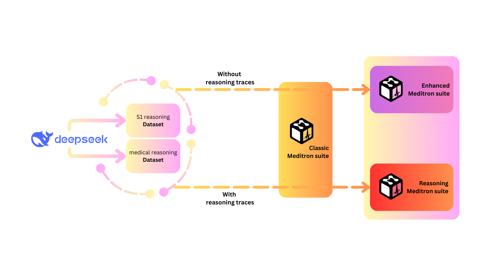
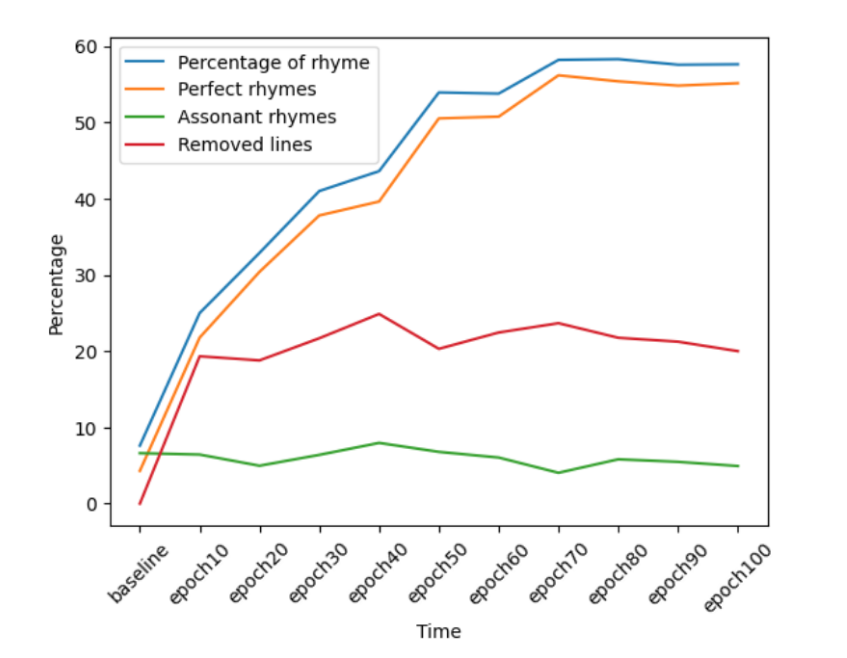

Xavier Theimer-Lienhard
Research Associate at EPFL. Previously Research Associate at Yale University. I've led research initiatives on LLM training and data generation. I work in EPFL’s LiGHT lab whose goal is to save more lives with technology. I believe that AI will bring more knowledge to the world.
For the past two years I’ve been part of Meditron, an academic initiative creating SOTA medical LLMs. My contributions include:
- Meditron reasoning, a family of medical models trained for reasoning.
- Meditree, a novel inference technique that improves clinical reasoning.
- A pipeline for generating safe and representative synthetic patient data using DSPy and RAG.
News
Experience
Publications / Projects

Enhancing Meditron capabilities with synthetic and reasoning datasets
X. Theimer-Lienhard, M. Jaggi, M.-A. Hartley.
Master thesis
Pdf
Detailing finding on finetuning open-source LLMs on medical reasoning datasets, achieving 13-30% reasoning benchmark and 5-9% medical benchmark improvements. Compared distillation with and without reasoning traces and found that results are better when finetuning without reasoning traces.
X. Theimer-Lienhard, M. Jaggi, M.-A. Hartley.
Master thesis
Detailing finding on finetuning open-source LLMs on medical reasoning datasets, achieving 13-30% reasoning benchmark and 5-9% medical benchmark improvements. Compared distillation with and without reasoning traces and found that results are better when finetuning without reasoning traces.

Llama-3-Meditron: An Open-Weight Suite of Medical LLMs
A. Sallinen, A. Solergibert, M. Zhang, G. Boyé, M. Dupont-Roc, X. Theimer-Lienhard, E. Boisson, B. Bernath, H. Hadhri, A. Tran, et al.
AAAI 2025, Gen AI for health
OpenReview
We finetune Llama-3.1 with the Meditron mixture using SFT and ORPO. Meditron outperforms its base model by 3% on medical benchmarks, and our Meditree inference method allows us to reach GPT4-Base performance of 80% accuracy on medical benchmarks, a 5% gain over Meditron alone.
A. Sallinen, A. Solergibert, M. Zhang, G. Boyé, M. Dupont-Roc, X. Theimer-Lienhard, E. Boisson, B. Bernath, H. Hadhri, A. Tran, et al.
AAAI 2025, Gen AI for health
OpenReview
We finetune Llama-3.1 with the Meditron mixture using SFT and ORPO. Meditron outperforms its base model by 3% on medical benchmarks, and our Meditree inference method allows us to reach GPT4-Base performance of 80% accuracy on medical benchmarks, a 5% gain over Meditron alone.

GPoeT: a language model trained for rhyme generation on synthetic data
A. Popescu-Belis, A. R. Atrio, B. Bernath, E. Boisson, T. Ferrari, X. Theimer-Lienhard, G. Vernikos.
Proceedings of the 7th Joint SIGHUM Workshop on Computational Linguistics for CH, SSH and Lit.
ACLAnthology
We finetune GPT-2 on 142 MB of natural poems and 6 MB of rhyming poems and find that we obtain rhymes 60% of the time versus the 11% baseline.
A. Popescu-Belis, A. R. Atrio, B. Bernath, E. Boisson, T. Ferrari, X. Theimer-Lienhard, G. Vernikos.
Proceedings of the 7th Joint SIGHUM Workshop on Computational Linguistics for CH, SSH and Lit.
ACLAnthology
We finetune GPT-2 on 142 MB of natural poems and 6 MB of rhyming poems and find that we obtain rhymes 60% of the time versus the 11% baseline.